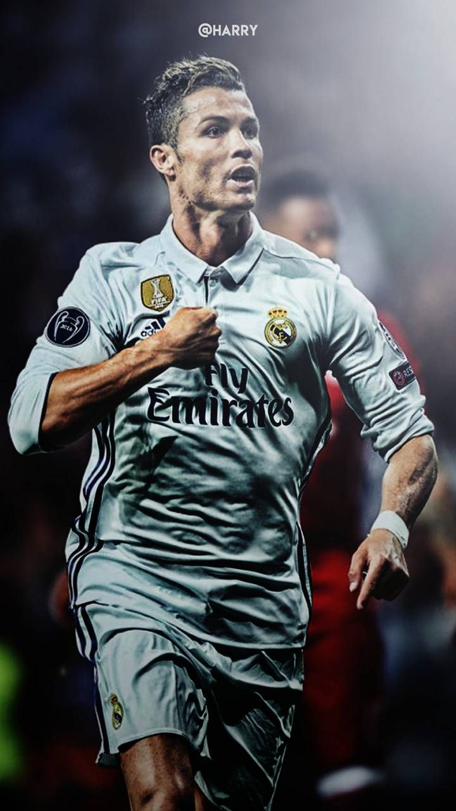

Discipline • Dedication • Greatness

Cristiano Ronaldo dos Santos Aveiro is a Portuguese professional footballer who plays as a forward. He is widely regarded as one of the greatest players of all time. Born on 5 February 1985 in Madeira, Portugal, he has won 5 Ballon d'Or awards and countless trophies throughout his career.
| Achievement | Count |
|---|---|
| Ballon d'Or Awards | 5 |
| UEFA Champions League Titles | 5 |
| European Golden Shoes | 4 |
| FIFA Best Player Awards | 2 |
| Total Major Trophies | 35+ |
Ronaldo is the first player in history to win the Champions League 5 times and score in 5 different World Cups.
Goals Scored (900+):
Trophies Won (35+):
Assists (250+):
Talent without working hard is nothing.
— Cristiano Ronaldo
Ronaldo has scored over 900 career goals and holds the record for the most goals in the UEFA Champions League with 140 goals.
Matches Played : 1200+
Goals Scored : 900+
Assists : 250+
Trophies Won : 35+
Ronaldo's Height: 1.87 m = 187 cm
Ronaldo's Jersey Number: 7
Scientific Fact: O2 helps him run — H2O keeps him hydrated 💧
Einstein's Formula: E = mc2
Discipline • Dedication • Greatness
Created by GG Chandramouli | Task 2 | Code • Create • Grow